Week 5 – Grouping and combining data
Learning objectives
- Use
group_by()withsummarise()to compute summary values for groups of observations- Use
count()to count the numbers of observations within categories- Combine data from two tables based on a common identifier (
joinoperations)- Customize plots created using ggplot2 by changing labels, scales and colours
Grouping and combining data
In this session, we’ll look at some more useful functions provided by the dplyr package, the ‘workhorse’ in the tidyverse family for manipulating tabular data. Continuing from last week, we’ll see how we can summarise data for groups of observations within different categories. We’ll also show how dplyr allows us to combine data for the same observational unit, e.g. person or date, that comes from different sources and is read into R in different tables.
We’ll also look at how to customize the plots we create using ggplot2, in particular how we can add or change titles and labels, how we can adjust the way the axes are displayed and how we can use a colour scheme of our choosing.
dplyr and ggplot2 are core component packages within the tidyverse and both get loaded as part of the tidyverse.
library(tidyverse)To demonstrate how these grouping and combining functions work and to illustrate customization of plots, we’ll again use the METABRIC data set.
metabric <- read_csv("data/metabric_clinical_and_expression_data.csv")
metabric## # A tibble: 1,904 x 32
## Patient_ID Cohort Age_at_diagnosis Survival_time Survival_status
## <chr> <dbl> <dbl> <dbl> <chr>
## 1 MB-0000 1 75.6 140. LIVING
## 2 MB-0002 1 43.2 84.6 LIVING
## 3 MB-0005 1 48.9 164. DECEASED
## 4 MB-0006 1 47.7 165. LIVING
## 5 MB-0008 1 77.0 41.4 DECEASED
## 6 MB-0010 1 78.8 7.8 DECEASED
## 7 MB-0014 1 56.4 164. LIVING
## 8 MB-0022 1 89.1 99.5 DECEASED
## 9 MB-0028 1 86.4 36.6 DECEASED
## 10 MB-0035 1 84.2 36.3 DECEASED
## # … with 1,894 more rows, and 27 more variables: Vital_status <chr>,
## # Chemotherapy <chr>, Radiotherapy <chr>, Tumour_size <dbl>,
## # Tumour_stage <dbl>, Neoplasm_histologic_grade <dbl>,
## # Lymph_nodes_examined_positive <dbl>, Lymph_node_status <dbl>,
## # Cancer_type <chr>, ER_status <chr>, PR_status <chr>,
## # HER2_status <chr>, HER2_status_measured_by_SNP6 <chr>, PAM50 <chr>,
## # `3-gene_classifier` <chr>, Nottingham_prognostic_index <dbl>,
## # Cellularity <chr>, Integrative_cluster <chr>, Mutation_count <dbl>,
## # ESR1 <dbl>, ERBB2 <dbl>, PGR <dbl>, TP53 <dbl>, PIK3CA <dbl>,
## # GATA3 <dbl>, FOXA1 <dbl>, MLPH <dbl>Grouping observations
Summaries for groups
In the previous session we introduced the summarise() function for computing a summary value for one or more variables from all rows in a table (data frame or tibble). For example, we computed the mean expression of ESR1, the estrogen receptor alpha gene, as follows.
summarise(metabric, mean(ESR1))## # A tibble: 1 x 1
## `mean(ESR1)`
## <dbl>
## 1 9.61While the summarise() function is useful on its own, it becomes really powerful when applied to groups of observations within a dataset. For example, we might be more interested in the mean ESR1 expression calculated separately for ER positive and ER negative tumours. We could take each group in turn, filter the data frame to contain only the rows for a given ER status, then apply the summarise() function to compute the mean expression, but that would be somewhat cumbersome. Even more so if we chose to do this for a categorical variable with more than two states, e.g. for each of the integrative clusters. Fortunately, the group_by() function allows this to be done in one simple step.
metabric %>%
group_by(ER_status) %>%
summarise(mean(ESR1))## # A tibble: 2 x 2
## ER_status `mean(ESR1)`
## <chr> <dbl>
## 1 Negative 6.21
## 2 Positive 10.6We get an additional column in our output for the categorical variable, ER_status, and a row for each category.
Incidentally, we should expect this result of ER-positive tumours having a higher expression of ESR1 on average than ER-negative tumours. Simple summaries like this are a good way of checking that what we think we know actually holds true in the data we’re looking at. Note that the expression values are on a log2scale so ER-positive breast cancers express ESR1 at a level that is approximately 20 times greater, on average, than that of ER-negative tumours.
2 ** (10.6 - 6.21) # equivalent to (2 ** 10.6) / (2 ** 6.21)## [1] 20.96629Let’s have a look at how ESR1 expression varies between the integrative cluster subtypes defined by the METABRIC study.
metabric %>%
group_by(Integrative_cluster) %>%
summarise(ESR1 = mean(ESR1))## # A tibble: 11 x 2
## Integrative_cluster ESR1
## <chr> <dbl>
## 1 1 10.3
## 2 10 6.39
## 3 2 10.9
## 4 3 10.5
## 5 4ER- 6.55
## 6 4ER+ 9.78
## 7 5 7.78
## 8 6 10.9
## 9 7 10.9
## 10 8 11.1
## 11 9 9.96As before we can summarize multiple observations, e.g. the mean expression for other genes of interest, this time using the PAM50 classification to define the groups.
metabric %>%
group_by(PAM50) %>%
summarise_at(vars(ESR1, PGR, ERBB2), mean)## # A tibble: 7 x 4
## PAM50 ESR1 PGR ERBB2
## <chr> <dbl> <dbl> <dbl>
## 1 Basal 6.42 5.46 10.2
## 2 claudin-low 7.47 5.60 9.85
## 3 Her2 7.81 5.62 12.6
## 4 LumA 10.8 6.75 10.7
## 5 LumB 11.0 6.39 10.6
## 6 NC 10.9 6.47 10.3
## 7 Normal 9.50 6.21 10.8We can also refine our groups by using more than one categorical variable. Let’s subdivide the PAM50 groups by HER2 status to illustrate this.
metabric %>%
group_by(PAM50, HER2_status) %>%
summarise(ESR1_mean = mean(ESR1))## # A tibble: 13 x 3
## # Groups: PAM50 [7]
## PAM50 HER2_status ESR1_mean
## <chr> <chr> <dbl>
## 1 Basal Negative 6.39
## 2 Basal Positive 6.71
## 3 claudin-low Negative 7.52
## 4 claudin-low Positive 6.80
## 5 Her2 Negative 8.82
## 6 Her2 Positive 7.04
## 7 LumA Negative 10.8
## 8 LumA Positive 10.1
## 9 LumB Negative 11.1
## 10 LumB Positive 10.2
## 11 NC Negative 10.9
## 12 Normal Negative 9.68
## 13 Normal Positive 7.77It can be quite useful to know how many observations are within each group. We can use a special function, n(), that counts the number of rows rather than computing a summary value from one of the columns.
metabric %>%
group_by(PAM50, HER2_status) %>%
summarise(N = n(), ESR1_mean = mean(ESR1))## # A tibble: 13 x 4
## # Groups: PAM50 [7]
## PAM50 HER2_status N ESR1_mean
## <chr> <chr> <int> <dbl>
## 1 Basal Negative 179 6.39
## 2 Basal Positive 20 6.71
## 3 claudin-low Negative 184 7.52
## 4 claudin-low Positive 15 6.80
## 5 Her2 Negative 95 8.82
## 6 Her2 Positive 125 7.04
## 7 LumA Negative 658 10.8
## 8 LumA Positive 21 10.1
## 9 LumB Negative 419 11.1
## 10 LumB Positive 42 10.2
## 11 NC Negative 6 10.9
## 12 Normal Negative 127 9.68
## 13 Normal Positive 13 7.77Counts
Counting observations within groups is such a common operation that dplyr provides a count() function to do just that. So we could count the number of patient samples in each of the PAM50 classes as follows.
count(metabric, PAM50)## # A tibble: 7 x 2
## PAM50 n
## <chr> <int>
## 1 Basal 199
## 2 claudin-low 199
## 3 Her2 220
## 4 LumA 679
## 5 LumB 461
## 6 NC 6
## 7 Normal 140This is much like the table() function we’ve used several times already to take a quick look at what values are contained in one of the columns in a data frame. They return different data structures however, with count() always returning a data frame (or tibble) that can then be passed to subsequent steps in a ‘piped’ workflow.
If we wanted to subdivide our categories by HER2 status, we can add this as an additional categorical variable just as we did with the previous group_by() examples.
count(metabric, PAM50, HER2_status)## # A tibble: 13 x 3
## PAM50 HER2_status n
## <chr> <chr> <int>
## 1 Basal Negative 179
## 2 Basal Positive 20
## 3 claudin-low Negative 184
## 4 claudin-low Positive 15
## 5 Her2 Negative 95
## 6 Her2 Positive 125
## 7 LumA Negative 658
## 8 LumA Positive 21
## 9 LumB Negative 419
## 10 LumB Positive 42
## 11 NC Negative 6
## 12 Normal Negative 127
## 13 Normal Positive 13The count column is named ‘n’ by default but you can change this.
count(metabric, PAM50, HER2_status, name = "Samples")## # A tibble: 13 x 3
## PAM50 HER2_status Samples
## <chr> <chr> <int>
## 1 Basal Negative 179
## 2 Basal Positive 20
## 3 claudin-low Negative 184
## 4 claudin-low Positive 15
## 5 Her2 Negative 95
## 6 Her2 Positive 125
## 7 LumA Negative 658
## 8 LumA Positive 21
## 9 LumB Negative 419
## 10 LumB Positive 42
## 11 NC Negative 6
## 12 Normal Negative 127
## 13 Normal Positive 13count() is equivalent to grouping observations with group_by() and calling summarize() using the special n() function to count the number of rows. So the above statement could have been written in a more long-winded way as follows.
metabric %>%
group_by(PAM50, HER2_status) %>%
summarize(Samples = n())Summarizing with n() is useful when showing the number of observations in a group alongside a summary value, as we did earlier looking at the mean ESR1 expression within specified groups; it allows you to see if you’re drawing conclusions from only a few data points.
Missing values
Many summarization functions return NA if any of the values are missing, i.e. the column contains NA values. As an example, we’ll compute the average size of ER-negative and ER-positive tumours.
metabric %>%
group_by(ER_status) %>%
summarize(N = n(), `Average tumour size` = mean(Tumour_size))## # A tibble: 2 x 3
## ER_status N `Average tumour size`
## <chr> <int> <dbl>
## 1 Negative 445 NA
## 2 Positive 1459 NAThe mean() function, along with many similar summarization functions, has an na.rm argument that can be set to TRUE to exclude those missing values from the calculation.
metabric %>%
group_by(ER_status) %>%
summarize(N = n(), `Average tumour size` = mean(Tumour_size, na.rm = TRUE))## # A tibble: 2 x 3
## ER_status N `Average tumour size`
## <chr> <int> <dbl>
## 1 Negative 445 28.5
## 2 Positive 1459 25.6An alternative would be to filter out the observations with missing values but then the number of samples in each ER status group would take on a different meaning, which may or may not be what we actually want.
metabric %>%
filter(!is.na(Tumour_size)) %>%
group_by(ER_status) %>%
summarize(N = n(), `Average tumour size` = mean(Tumour_size))## # A tibble: 2 x 3
## ER_status N `Average tumour size`
## <chr> <int> <dbl>
## 1 Negative 438 28.5
## 2 Positive 1446 25.6Counts and proportions
The sum() and mean() summarization functions are often used with logical values. It might seem surprising to compute a summary for a logical variable but but this turns out to be quite a useful thing to do, for counting the number of TRUE values or obtaining the proportion of values that are TRUE.
Following on from the previous example we could add a column to our summary of average tumour size for ER-positive and ER-negative patients that contains the number of missing values.
metabric %>%
group_by(ER_status) %>%
summarize(N = n(), Missing = sum(is.na(Tumour_size)), `Average tumour size` = mean(Tumour_size, na.rm = TRUE))## # A tibble: 2 x 4
## ER_status N Missing `Average tumour size`
## <chr> <int> <int> <dbl>
## 1 Negative 445 7 28.5
## 2 Positive 1459 13 25.6Why does this work? Well, the is.na() function takes a vector and sees which values are NA, returning a logical vector of TRUE where the value was NA and FALSE if not.
test_vector <- c(1, 3, 2, NA, 6, 5, NA, 10)
is.na(test_vector)## [1] FALSE FALSE FALSE TRUE FALSE FALSE TRUE FALSEThe sum() function treats the logical vector as a set of 0s and 1s where FALSE is 0 and TRUE is 1. In effect sum() counts the number of TRUE values.
sum(is.na(test_vector))## [1] 2Similarly, mean() will compute the proportion of the values that are TRUE.
mean(is.na(test_vector))## [1] 0.25So let’s calculate the number and proportion of samples that do not have a recorded tumour size in each of the ER-negative and ER-positive groups.
metabric %>%
group_by(ER_status) %>%
summarize(N = n(), `Missing tumour size` = sum(is.na(Tumour_size)), `Proportion missing` = mean(is.na(Tumour_size)))## # A tibble: 2 x 4
## ER_status N `Missing tumour size` `Proportion missing`
## <chr> <int> <int> <dbl>
## 1 Negative 445 7 0.0157
## 2 Positive 1459 13 0.00891We can use sum() and mean() for any condition that returns a logical vector. We could, for example, find the number and proportion of patients that survived longer than 10 years (120 months) in each of the ER-negative and ER-positive groups.
metabric %>%
filter(Survival_status == "DECEASED") %>%
group_by(ER_status) %>%
summarise(N = n(), N_long_survival = sum(Survival_time > 120), Proportion_long_survival = mean(Survival_time > 120))## # A tibble: 2 x 4
## ER_status N N_long_survival Proportion_long_survival
## <chr> <int> <int> <dbl>
## 1 Negative 250 40 0.16
## 2 Positive 853 325 0.381Selecting or counting distinct things
There are occassions when we want to count the number of distinct values in a variable or a combination of variables. In this week’s assignment, we introduce another set of data from the METABRIC study which contains details of the mutations detected by targeted sequencing of a panel of 173 genes. We’ll read this data into R now as this provides a good example of having multiple observations in different rows for a single observational unit, in this case several mutations detected in each tumour sample.
mutations <- read_csv("data/metabric_mutations.csv")
select(mutations, Patient_ID, Chromosome, Position = Start_Position, Ref = Reference_Allele, Alt = Tumor_Seq_Allele1, Type = Variant_Type, Gene)## # A tibble: 17,272 x 7
## Patient_ID Chromosome Position Ref Alt Type Gene
## <chr> <chr> <dbl> <chr> <chr> <chr> <chr>
## 1 MTS-T0058 17 7579344 <NA> <NA> INS TP53
## 2 MTS-T0058 17 7579346 <NA> <NA> INS TP53
## 3 MTS-T0058 6 168299111 G G SNP MLLT4
## 4 MTS-T0058 22 29999995 G G SNP NF2
## 5 MTS-T0059 2 198288682 A A SNP SF3B1
## 6 MTS-T0059 6 86195125 T T SNP NT5E
## 7 MTS-T0059 7 55241717 C C SNP EGFR
## 8 MTS-T0059 10 6556986 C C SNP PRKCQ
## 9 MTS-T0059 11 62300529 T T SNP AHNAK
## 10 MTS-T0059 15 74912475 G G SNP CLK3
## # … with 17,262 more rowsWe can see from just these few rows that each patient sample has multiple mutations and sometimes there are more than one mutation in the same gene within a sample, as can be seen in the first two rows at the top of the table above.
If we want to count the number of patients in which mutations were detected we could select the distinct set of patient identifiers using the distinct() function.
mutations %>%
distinct(Patient_ID) %>%
nrow()## [1] 2369Similarly, we could select the distinct set of mutated genes for each patient as follows.
mutations %>%
distinct(Patient_ID, Gene)## # A tibble: 15,656 x 2
## Patient_ID Gene
## <chr> <chr>
## 1 MTS-T0058 TP53
## 2 MTS-T0058 MLLT4
## 3 MTS-T0058 NF2
## 4 MTS-T0059 SF3B1
## 5 MTS-T0059 NT5E
## 6 MTS-T0059 EGFR
## 7 MTS-T0059 PRKCQ
## 8 MTS-T0059 AHNAK
## 9 MTS-T0059 CLK3
## 10 MTS-T0059 TP53
## # … with 15,646 more rowsThis has reduced the number of rows as only distinct combinations of patient and gene are retained. This would be necessary if we wanted to count the number of patients that have mutations in each gene rather than the number of mutations for that gene regardless of the patient.
# number of mutations for each gene
count(mutations, Gene)## # A tibble: 173 x 2
## Gene n
## <chr> <int>
## 1 ACVRL1 20
## 2 AFF2 70
## 3 AGMO 43
## 4 AGTR2 14
## 5 AHNAK 327
## 6 AHNAK2 859
## 7 AKAP9 182
## 8 AKT1 115
## 9 AKT2 23
## 10 ALK 98
## # … with 163 more rows# number of tumour samples in which each gene is mutated
mutations %>%
distinct(Patient_ID, Gene) %>%
count(Gene)## # A tibble: 173 x 2
## Gene n
## <chr> <int>
## 1 ACVRL1 20
## 2 AFF2 69
## 3 AGMO 43
## 4 AGTR2 14
## 5 AHNAK 272
## 6 AHNAK2 530
## 7 AKAP9 173
## 8 AKT1 115
## 9 AKT2 23
## 10 ALK 95
## # … with 163 more rowsThe genes that differ in these two tables are those that have more than one mutation within a patient tumour sample.
Joining data
In many real life situations, data are spread across multiple tables or spreadsheets. Usually this occurs because different types of information about a subject, e.g. a patient, are collected from different sources. It may be desirable for some analyses to combine data from two or more tables into a single data frame based on a common column, for example, an attribute that uniquely identifies the subject such as a patient identifier.
dplyr provides a set of join functions for combining two data frames based on matches within specified columns. These operations are very similar to carrying out join operations between tables in a relational database using SQL.
left_join
To illustrate join operations we’ll first consider the most common type, a “left join”. In the schematic below the two data frames share a common column, V1. We can combine the two data frames into a single data frame by matching rows in the first data frame with those in the second data frame that share the same value of variable V1.
dplyr left join
left_join() returns all rows from the first data frame regardless of whether there is a match in the second data frame. Rows with no match are included in the resulting data frame but have NA values in the additional columns coming from the second data frame.
Here’s an example in which details about members of the Beatles and Rolling Stones are contained in two tables, using data frames conveniently provided by dplyr (we’ll look at a real example shortly).
The name column identifies each of the band members and is used for matching rows from the two tables.
band_members## # A tibble: 3 x 2
## name band
## <chr> <chr>
## 1 Mick Stones
## 2 John Beatles
## 3 Paul Beatlesband_instruments## # A tibble: 3 x 2
## name plays
## <chr> <chr>
## 1 John guitar
## 2 Paul bass
## 3 Keith guitarleft_join(band_members, band_instruments, by = "name")## # A tibble: 3 x 3
## name band plays
## <chr> <chr> <chr>
## 1 Mick Stones <NA>
## 2 John Beatles guitar
## 3 Paul Beatles bassWe have joined the band members and instruments tables based on the common name column. Because this is a left join, only observations for band members in the ‘left’ table (band_members) are included with information brought in from the ‘right’ table (band_instruments) where such exists. There is no entry in band_instruments for Mick so an NA value is inserted into the plays column that gets added in the combined data frame. Keith is only included in the band_instruments data frame so doesn’t make it into the final output as this is based on those band members in the ‘left’ table.
right_join() is similar but returns all rows from the second data frame, i.e. the ‘right’ data frame, that have a match with rows in the first data frame.
right_join(band_members, band_instruments, by = "name")## # A tibble: 3 x 3
## name band plays
## <chr> <chr> <chr>
## 1 John Beatles guitar
## 2 Paul Beatles bass
## 3 Keith <NA> guitarright_join() is used very infrequently compared with left_join().
inner_join
Another joining operation is the “inner join” in which only observations that are common to both data frames are included.
dplyr inner join
inner_join(band_members, band_instruments, by = "name")## # A tibble: 2 x 3
## name band plays
## <chr> <chr> <chr>
## 1 John Beatles guitar
## 2 Paul Beatles bassIn this case when considering observations identified by name, only John and Paul are contained in both the band_members and band_instruments tables, so only these make it into the combined table.
full_join
We’ve seen how missing rows from one table can be retained in the joined data frame using left_join or right_join but sometimes data for a given subject may be missing from either of the tables and we still want that subject to appear in the combined table. A full_join will return all rows and all columns from the two tables and where there are no matching values, NA values are used to fill in the missing values.

dplyr full join
full_join(band_members, band_instruments, by = "name")## # A tibble: 4 x 3
## name band plays
## <chr> <chr> <chr>
## 1 Mick Stones <NA>
## 2 John Beatles guitar
## 3 Paul Beatles bass
## 4 Keith <NA> guitarNow, with full_join(), we have rows for both Mick and Keith even though they are only in one or other of the tables being joined.
Joining on columns with different headers
It isn’t uncommon for the columns used for joining two tables to have different names in each table. Of course we could rename one of the two columns, e.g. using the dplyr rename() function, but the dplyr join functions allow you to match using differently-named columns as illustrated using another version of the band_instruments data frame.
band_instruments2## # A tibble: 3 x 2
## artist plays
## <chr> <chr>
## 1 John guitar
## 2 Paul bass
## 3 Keith guitarleft_join(band_members, band_instruments2, by = c("name" = "artist"))## # A tibble: 3 x 3
## name band plays
## <chr> <chr> <chr>
## 1 Mick Stones <NA>
## 2 John Beatles guitar
## 3 Paul Beatles bassThe name for the column used for joining is the one given in the first table, i.e. the ‘left’ table, so name rather than artist in this case.
Multiple matches in join operations
You may be wondering what happens if there are multiple rows in one of both of the two tables for the thing that is being joined, for example what would happen if our second table had two entries for instruments that Paul plays.
band_instruments3 <- tibble(
name = c("John", "Paul", "Paul", "Keith"),
plays = c("guitar", "bass", "guitar", "guitar")
)
band_instruments3## # A tibble: 4 x 2
## name plays
## <chr> <chr>
## 1 John guitar
## 2 Paul bass
## 3 Paul guitar
## 4 Keith guitarleft_join(band_members, band_instruments3, by = "name")## # A tibble: 4 x 3
## name band plays
## <chr> <chr> <chr>
## 1 Mick Stones <NA>
## 2 John Beatles guitar
## 3 Paul Beatles bass
## 4 Paul Beatles guitarWe get both entries from the second table added to the first table.
Let’s add an entry for Paul being in a second band and see what happens then when we combine the two tables, each with two entries for Paul.
band_members3 <- tibble(
name = c("Mick", "John", "Paul", "Paul"),
band = c("Stones", "Beatles", "Beatles", "Wings")
)
band_members3## # A tibble: 4 x 2
## name band
## <chr> <chr>
## 1 Mick Stones
## 2 John Beatles
## 3 Paul Beatles
## 4 Paul Wingsleft_join(band_members3, band_instruments3, by = "name")## # A tibble: 6 x 3
## name band plays
## <chr> <chr> <chr>
## 1 Mick Stones <NA>
## 2 John Beatles guitar
## 3 Paul Beatles bass
## 4 Paul Beatles guitar
## 5 Paul Wings bass
## 6 Paul Wings guitarThe resulting table includes all combinations of band and instrument for Paul.
Joining by matching on multiple columns
Sometimes the observations being combined are identified by multiple columns, for example, a forename and a surname. We can specify a vector of column names to be used in the join operation.
band_members4 <- tibble(
forename = c("Mick", "John", "Paul", "John"),
surname = c("Jagger", "Lennon", "McCartney", "Squire"),
band = c("Stones", "Beatles", "Beatles", "Roses")
)
band_instruments4 <- tibble(
forename = c("John", "Paul", "Keith", "John"),
surname = c("Lennon", "McCartney", "Richards", "Squire"),
plays = c("guitar", "bass", "guitar", "guitar")
)
full_join(band_members4, band_instruments4, by = c("forename", "surname"))## # A tibble: 5 x 4
## forename surname band plays
## <chr> <chr> <chr> <chr>
## 1 Mick Jagger Stones <NA>
## 2 John Lennon Beatles guitar
## 3 Paul McCartney Beatles bass
## 4 John Squire Roses guitar
## 5 Keith Richards <NA> guitarClashing column names
Occasionally we may find that there are duplicated columns in the two tables we want to join, columns that aren’t those used for joining. These variables may even contain different data but happen to have the same name. In such cases dplyr joins add a suffix to each column in the combined table.
band_members5 <- tibble(
name = c("John", "Paul", "Ringo", "George", "Mick"),
birth_year = c(1940, 1942, 1940, 1943, 1943),
band = c("Beatles", "Beatles", "Beatles", "Beatles", "Stones")
)
band_instruments5 <- tibble(
name = c("John", "Paul", "Ringo", "George"),
birth_year = c(1940, 1942, 1940, 1943),
instrument = c("guitar", "bass", "drums", "guitar")
)
left_join(band_members5, band_instruments5, by = "name")## # A tibble: 5 x 5
## name birth_year.x band birth_year.y instrument
## <chr> <dbl> <chr> <dbl> <chr>
## 1 John 1940 Beatles 1940 guitar
## 2 Paul 1942 Beatles 1942 bass
## 3 Ringo 1940 Beatles 1940 drums
## 4 George 1943 Beatles 1943 guitar
## 5 Mick 1943 Stones NA <NA>It is advisable to rename or remove the duplicated columns that aren’t used for joining.
Filtering joins
A variation on the join operations we’ve considered are semi_join() and anti_join() that filter the rows in one table based on matches or lack of matches to rows in another table.
semi_join() returns all rows from the first table where there are matches in the other table.
semi_join(band_members, band_instruments, by = "name")## # A tibble: 2 x 2
## name band
## <chr> <chr>
## 1 John Beatles
## 2 Paul Beatlesanti_join() returns all rows where there is no match in the other table, i.e. those that are unique to the first table.
anti_join(band_members, band_instruments, by = "name")## # A tibble: 1 x 2
## name band
## <chr> <chr>
## 1 Mick StonesA real example: joining the METABRIC clinical and mRNA expression data
Let’s move on to a real example of joining data from two different tables that we used in putting together the combined METABRIC clinical and expression data set.
We first read the clinical data into R and then just select a small number of columns to make it easier to see what is going on when combining the data.
clinical_data <- read_csv("data/metabric_clinical_data.csv")
clinical_data <- select(clinical_data, Patient_ID, ER_status, PAM50)
clinical_data## # A tibble: 2,509 x 3
## Patient_ID ER_status PAM50
## <chr> <chr> <chr>
## 1 MB-0000 Positive claudin-low
## 2 MB-0002 Positive LumA
## 3 MB-0005 Positive LumB
## 4 MB-0006 Positive LumB
## 5 MB-0008 Positive LumB
## 6 MB-0010 Positive LumB
## 7 MB-0014 Positive LumB
## 8 MB-0020 Negative Normal
## 9 MB-0022 Positive claudin-low
## 10 MB-0025 Positive <NA>
## # … with 2,499 more rowsWe then read in the mRNA expression data that was downloaded separately from cBioPortal.
mrna_expression_data <- read_tsv("data/metabric_mrna_expression.txt")
mrna_expression_data## # A tibble: 2,509 x 10
## STUDY_ID SAMPLE_ID ESR1 ERBB2 PGR TP53 PIK3CA GATA3 FOXA1 MLPH
## <chr> <chr> <dbl> <dbl> <dbl> <dbl> <dbl> <dbl> <dbl> <dbl>
## 1 brca_metabric MB-0000 8.93 9.33 5.68 6.34 5.70 6.93 7.95 9.73
## 2 brca_metabric MB-0002 10.0 9.73 7.51 6.19 5.76 11.3 11.8 12.5
## 3 brca_metabric MB-0005 10.0 9.73 7.38 6.40 6.75 9.29 11.7 10.3
## 4 brca_metabric MB-0006 10.4 10.3 6.82 6.87 7.22 8.67 11.9 10.5
## 5 brca_metabric MB-0008 11.3 9.96 7.33 6.34 5.82 9.72 11.6 12.2
## 6 brca_metabric MB-0010 11.2 9.74 5.95 5.42 6.12 9.79 12.1 11.4
## 7 brca_metabric MB-0014 10.8 9.28 7.72 5.99 7.48 8.37 11.5 10.8
## 8 brca_metabric MB-0020 NA NA NA NA NA NA NA NA
## 9 brca_metabric MB-0022 10.4 8.61 5.59 6.17 7.59 7.87 10.7 9.95
## 10 brca_metabric MB-0025 NA NA NA NA NA NA NA NA
## # … with 2,499 more rowsNow we have both sets of data loaded into R as data frames, we can combine them into a single data frame using an inner_join(). Our resulting table will only contain entries for the patients for which expression data are available.
combined_data <- inner_join(clinical_data, mrna_expression_data, by = c("Patient_ID" = "SAMPLE_ID"))
combined_data## # A tibble: 2,509 x 12
## Patient_ID ER_status PAM50 STUDY_ID ESR1 ERBB2 PGR TP53 PIK3CA GATA3
## <chr> <chr> <chr> <chr> <dbl> <dbl> <dbl> <dbl> <dbl> <dbl>
## 1 MB-0000 Positive clau… brca_me… 8.93 9.33 5.68 6.34 5.70 6.93
## 2 MB-0002 Positive LumA brca_me… 10.0 9.73 7.51 6.19 5.76 11.3
## 3 MB-0005 Positive LumB brca_me… 10.0 9.73 7.38 6.40 6.75 9.29
## 4 MB-0006 Positive LumB brca_me… 10.4 10.3 6.82 6.87 7.22 8.67
## 5 MB-0008 Positive LumB brca_me… 11.3 9.96 7.33 6.34 5.82 9.72
## 6 MB-0010 Positive LumB brca_me… 11.2 9.74 5.95 5.42 6.12 9.79
## 7 MB-0014 Positive LumB brca_me… 10.8 9.28 7.72 5.99 7.48 8.37
## 8 MB-0020 Negative Norm… brca_me… NA NA NA NA NA NA
## 9 MB-0022 Positive clau… brca_me… 10.4 8.61 5.59 6.17 7.59 7.87
## 10 MB-0025 Positive <NA> brca_me… NA NA NA NA NA NA
## # … with 2,499 more rows, and 2 more variables: FOXA1 <dbl>, MLPH <dbl>Having combined the data, we can carry out exploratory data analysis using elements from both data sets.
combined_data %>%
filter(!is.na(PAM50), !is.na(ESR1)) %>%
ggplot(mapping = aes(x = PAM50, y = ESR1, colour = PAM50)) +
geom_boxplot(show.legend = FALSE)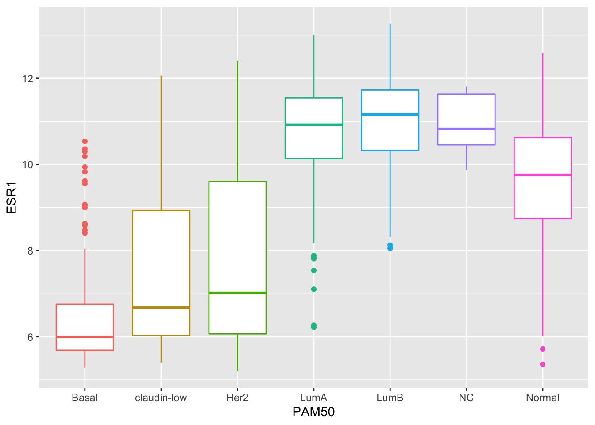
Customizing plots with ggplot2
Finally, we’ll turn our attention back to visualization using ggplot2 and how we can customize our plots by adding or changing titles and labels, changing the scales used on the x and y axes, and choosing colours.
Titles and labels
Adding titles and subtitles to a plot and changing the x- and y-axis labels is very straightforward using the labs() function.
plot <- ggplot(data = metabric, mapping = aes(x = GATA3, y = ESR1, colour = ER_status)) +
geom_point(size = 0.6, alpha = 0.5) +
geom_smooth(method = "lm") +
labs(
title = "mRNA expression in the METABRIC breast cancer data set",
subtitle = "GATA3 and ESR1 mRNA expression measured using Illumina HT-12 bead arrays",
x = "log2 GATA3 expression",
y = "log2 ESR1 expression",
colour = "ER status"
)
plot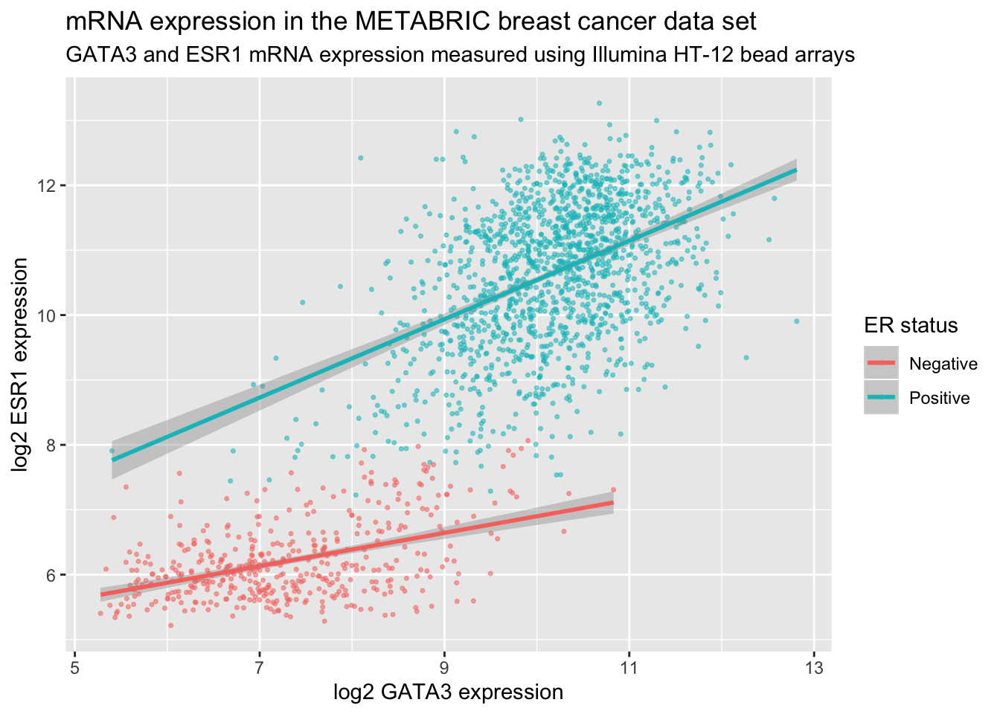
The labels are another component of the plot object that we’ve constructed, along with aesthetic mappings and layers (geoms). The plot object is a list and contains various elements including those mappings and layers and one element named labels.
labs() is a simple function for creating a list of labels you want to specify as name-value pairs as in the above example. You can name any aesthetic (in this case x and y) to override the default values (the column names) and you can add a title, subtitle and caption if you wish. In addition to changing the x- and y-axis labels, we also removed the underscore from the legend title by setting the label for the colour aesthetic.
Scales
Take a look at the x and y scales in the above plot. ggplot2 has chosen the x and y scales and where to put breaks and ticks.
Let’s have a look at the elements of the list object we created that specifies how the plot should be displayed.
names(plot)## [1] "data" "layers" "scales" "mapping" "theme"
## [6] "coordinates" "facet" "plot_env" "labels"One of the components of the plot is called scales. ggplot2 automatically adds default scales behind the scenes equivalent to the following:
plot <- ggplot(data = metabric, mapping = aes(x = GATA3, y = ESR1, colour = ER_status)) +
geom_point(size = 0.6, alpha = 0.5) +
geom_smooth(method = "lm") +
scale_x_continuous() +
scale_y_continuous() +
scale_colour_discrete()Note that we have three aesthetics and ggplot2 adds a scale for each.
plot$mapping## Aesthetic mapping:
## * `x` -> `GATA3`
## * `y` -> `ESR1`
## * `colour` -> `ER_status`The x and y variables (GATA3 and ESR1) are continuous so ggplot2 adds a continuous scale for each. ER_status is a discrete variable in this case so ggplot2 adds a discrete scale for colour.
Generalizing, the scales that are required follow the naming scheme:
scale_<NAME_OF_AESTHETIC>_<NAME_OF_SCALE>Look at the help page for scale_y_continuous to see what we can change about the y-axis scale.
First we’ll change the breaks, i.e. where ggplot2 puts ticks and numeric labels, on the y axis.
ggplot(data = metabric, mapping = aes(x = GATA3, y = ESR1, colour = ER_status)) +
geom_point(size = 0.6, alpha = 0.5) +
geom_smooth(method = "lm") +
scale_y_continuous(breaks = seq(5, 15, by = 2.5))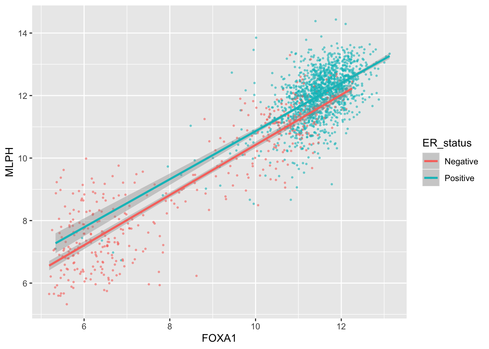
seq() is a useful function for generating regular sequences of numbers. In this case we wanted numbers from 5 to 15 going up in steps of 2.5.
seq(5, 15, by = 2.5)## [1] 5.0 7.5 10.0 12.5 15.0We could do the same thing for the x axis using scale_x_continuous().
We can also adjust the extents of the x or y axis.
ggplot(data = metabric, mapping = aes(x = GATA3, y = ESR1, colour = ER_status)) +
geom_point(size = 0.6, alpha = 0.5) +
geom_smooth(method = "lm") +
scale_y_continuous(breaks = seq(5, 15, by = 2.5), limits = c(4, 15))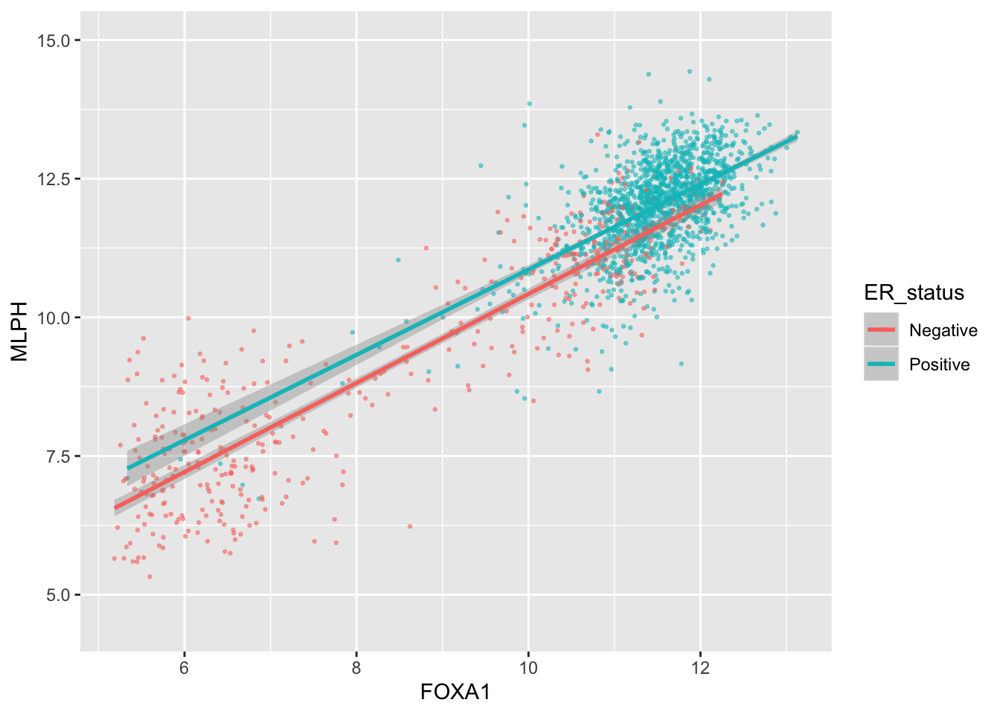
We can change the minor breaks, e.g. to add more lines that act as guides. These are shown as thin white lines when using the default theme (we’ll take a look at alternative themes next week).
ggplot(data = metabric, mapping = aes(x = GATA3, y = ESR1, colour = ER_status)) +
geom_point(size = 0.6, alpha = 0.5) +
geom_smooth(method = "lm") +
scale_y_continuous(breaks = seq(5, 12.5, by = 2.5), minor_breaks = seq(5, 13.5, 0.5), limits = c(5, 13.5))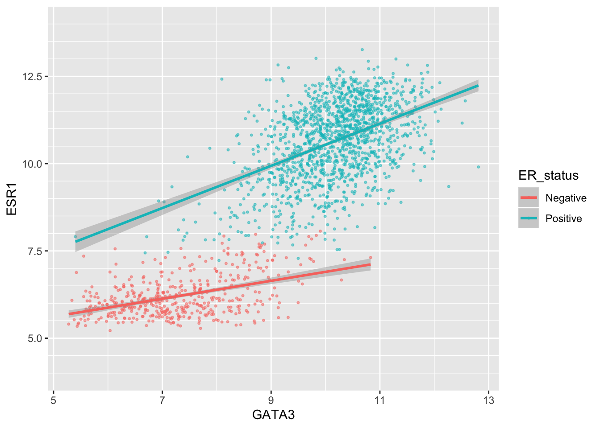
Or we can remove the minor breaks entirely.
ggplot(data = metabric, mapping = aes(x = GATA3, y = ESR1, colour = ER_status)) +
geom_point(size = 0.6, alpha = 0.5) +
geom_smooth(method = "lm") +
scale_y_continuous(breaks = seq(6, 14, by = 2), minor_breaks = NULL, limits = c(5, 13.5))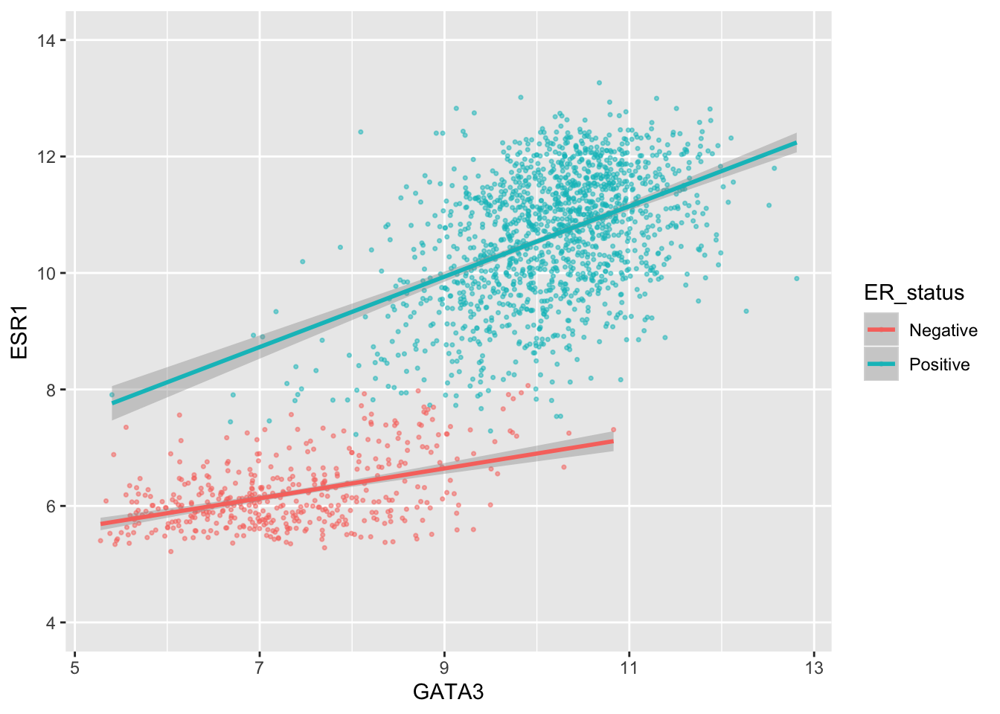
Similarly we could remove all breaks entirely.
ggplot(data = metabric, mapping = aes(x = GATA3, y = ESR1, colour = ER_status)) +
geom_point(size = 0.6, alpha = 0.5) +
geom_smooth(method = "lm") +
scale_y_continuous(breaks = NULL)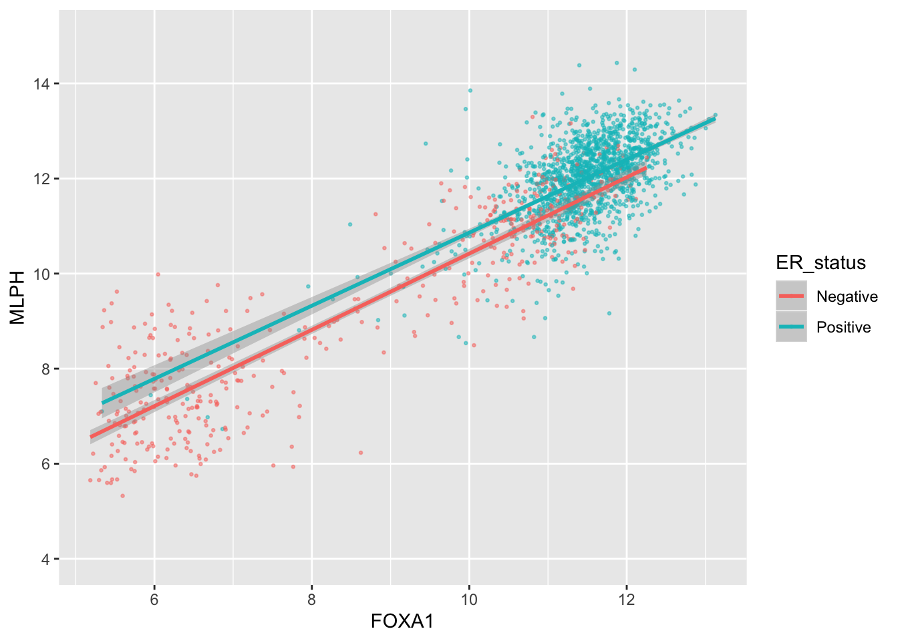
A more typical scenario would be to keep the breaks, because we want to display the ticks and their lables, but remove the grid lines. Somewhat confusingly the position of grid lines are controlled by a scale but preventing these from being displayed requires changing the theme. The theme controls the way in which non-data components are displayed – we’ll look at how these can be customized next week. For now, though, here’s an example of turning off the display of all grid lines for major and minor breaks for both axes.
ggplot(data = metabric, mapping = aes(x = GATA3, y = ESR1, colour = ER_status)) +
geom_point(size = 0.6, alpha = 0.5) +
geom_smooth(method = "lm") +
scale_y_continuous(breaks = seq(4, 14, by = 2), limits = c(4, 14)) +
theme(panel.grid = element_blank())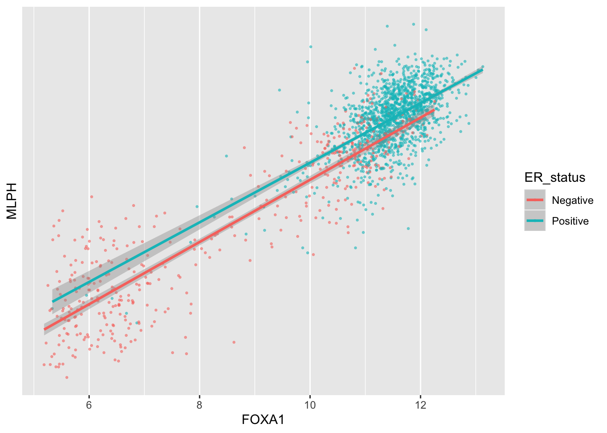
By default, the scales are expanded by 5% of the range on either side. We can add or reduce the space as follows.
ggplot(data = metabric, mapping = aes(x = GATA3, y = ESR1, colour = ER_status)) +
geom_point(size = 0.6, alpha = 0.5) +
geom_smooth(method = "lm") +
scale_x_continuous(expand = expand_scale(mult = 0.01)) +
scale_y_continuous(expand = expand_scale(mult = 0.25))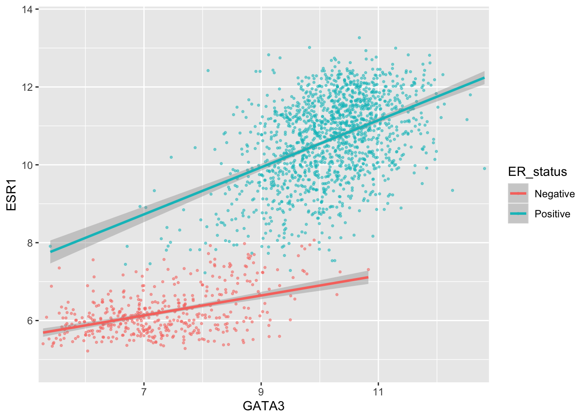
Here we only added 1% (0.01) of the range of GATA3 expression values on either side along the x axis but we added 25% (0.25) of the range of ESR1 expression on either side along the y axis.
We can move the axis to the other side of the plot –- not sure why you’d want to do this but with ggplot2 just about anything is possible.
ggplot(data = metabric, mapping = aes(x = GATA3, y = ESR1, colour = ER_status)) +
geom_point(size = 0.6, alpha = 0.5) +
geom_smooth(method = "lm") +
scale_x_continuous(position = "top")
Colours
The colour asthetic is used with a categorical variable, ER_status, in the scatter plots we’ve been customizing. The default colour scale used by ggplot2 for categorical variables is scale_colour_discrete. We can manually set the colours we wish to use using scale_colour_manual instead.
ggplot(data = metabric, mapping = aes(x = GATA3, y = ESR1, colour = ER_status)) +
geom_point(size = 0.6, alpha = 0.5) +
geom_smooth(method = "lm") +
scale_colour_manual(values = c("dodgerblue2", "firebrick2"))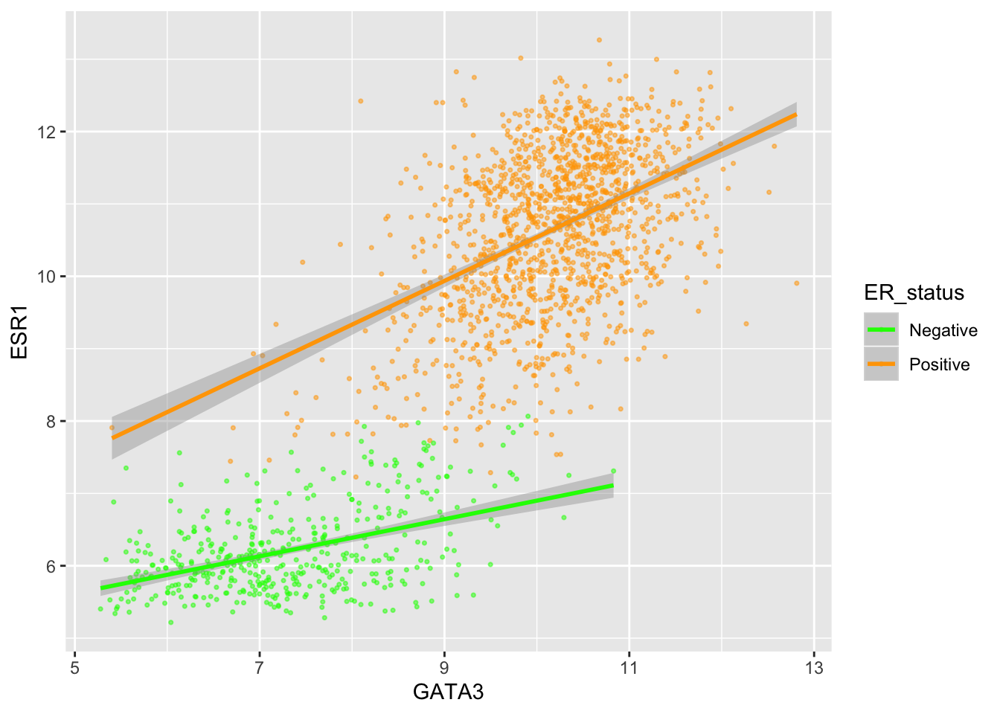
Setting colours manually is ok when we only have two or three categories but when we have a larger number it would be handy to be able to choose from a selection of carefully-constructed colour palettes. Helpfully, ggplot2 provides access to the ColorBrewer palettes through the functions scale_colour_brewer() and scale_fill_brewer().
ggplot(data = metabric, mapping = aes(x = GATA3, y = ESR1, colour = `3-gene_classifier`)) +
geom_point(size = 0.6, alpha = 0.5, na.rm = TRUE) +
scale_colour_brewer(palette = "Set1")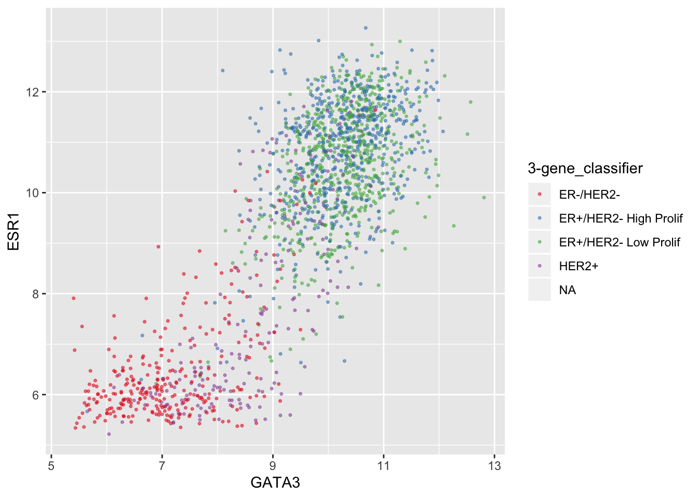
Look at the help page for scale_colour_brewer to see what other colour palettes are available and visit the ColorBrewer website to see what these look like.
Interestingly, you can set other attributes other than just the colours at the same time.
ggplot(data = metabric, mapping = aes(x = GATA3, y = ESR1, colour = ER_status)) +
geom_point(size = 0.6, alpha = 0.5) +
geom_smooth(method = "lm") +
scale_colour_manual(values = c("dodgerblue2", "firebrick2"), labels = c("ER-negative", "ER-positive")) +
labs(colour = NULL) # remove legend title for colour now that the labels are self-explanatory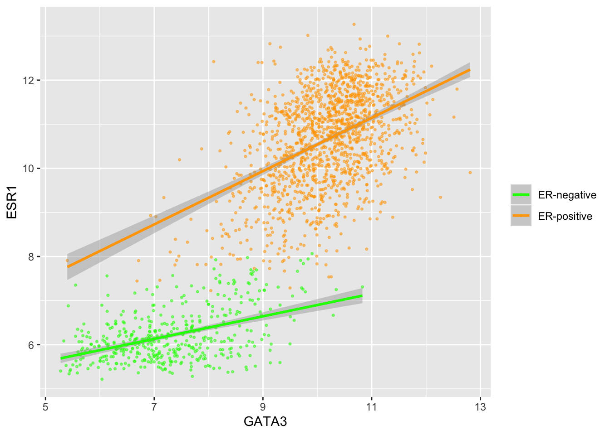
We have applied our own set of mappings from levels in the data to aesthetic values.
For continuous variables we may wish to be able to change the colours used in the colour gradient. To demonstrate this we’ll correct the Nottingham prognostic index (NPI) values and use this to colour points in the scatter plot of ESR1 vs GATA3 expression on a continuous scale.
# Nottingham_prognostic_index is incorrectly calculated in the data downloaded from cBioPortal
metabric <- mutate(metabric, Nottingham_prognostic_index = 0.02 * Tumour_size + Lymph_node_status + Neoplasm_histologic_grade)
#
metabric %>%
filter(!is.na(Nottingham_prognostic_index)) %>%
ggplot(mapping = aes(x = GATA3, y = ESR1, colour = Nottingham_prognostic_index)) +
geom_point(size = 0.5)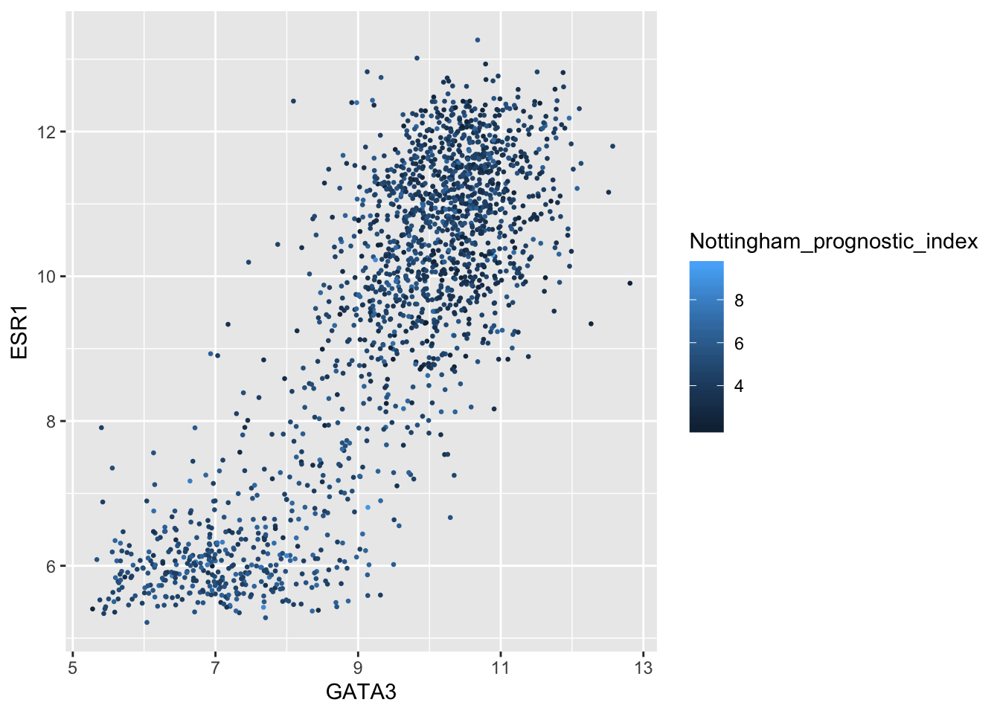
Higher NPI scores correspond to worse prognosis and lower chance of 5 year survival. We’ll emphasize those points on the scatter plot by adjusting our colour scale.
metabric %>%
filter(!is.na(Nottingham_prognostic_index)) %>%
ggplot(mapping = aes(x = GATA3, y = ESR1, colour = Nottingham_prognostic_index)) +
geom_point(size = 0.75) +
scale_colour_gradient(low = "white", high = "firebrick2")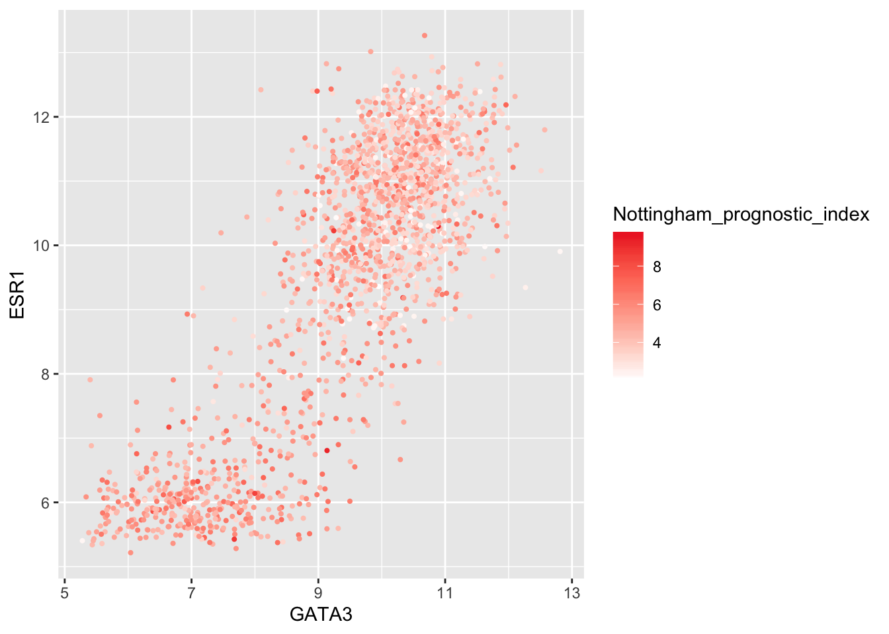
In some cases it might make sense to specify two colour gradients either side of a mid-point.
metabric %>%
filter(!is.na(Nottingham_prognostic_index)) %>%
ggplot(mapping = aes(x = GATA3, y = ESR1, colour = Nottingham_prognostic_index)) +
geom_point(size = 0.75) +
scale_colour_gradient2(low = "dodgerblue1", mid = "grey90", high = "firebrick1", midpoint = 4.5)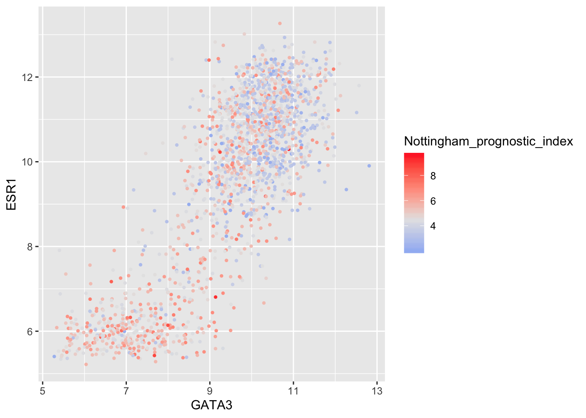
As before we can override the default labels and other aspects of the colour scale within the scale function.
metabric %>%
filter(!is.na(Nottingham_prognostic_index)) %>%
ggplot(mapping = aes(x = GATA3, y = ESR1, colour = Nottingham_prognostic_index)) +
geom_point(size = 0.5) +
scale_colour_gradient(
low = "lightblue", high = "darkblue",
name = "NPI",
breaks = 2:6,
limits = c(1.5, 6.5)
)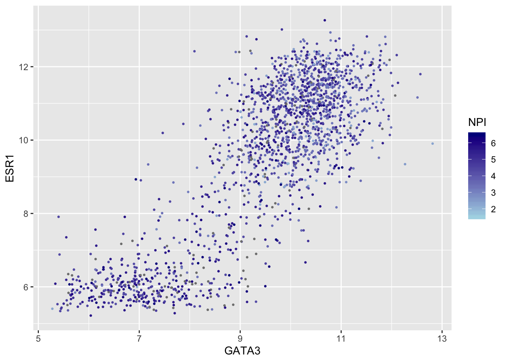
Summary
In this session we have covered the following:
- Computing summary values for groups of observations
- Counting the numbers of observations within categories
- Combining data from two tables through join operations
- Customizing plots created with ggplot2 by changing labels, scales and colours
Assignment
Assignment: assignment5.Rmd